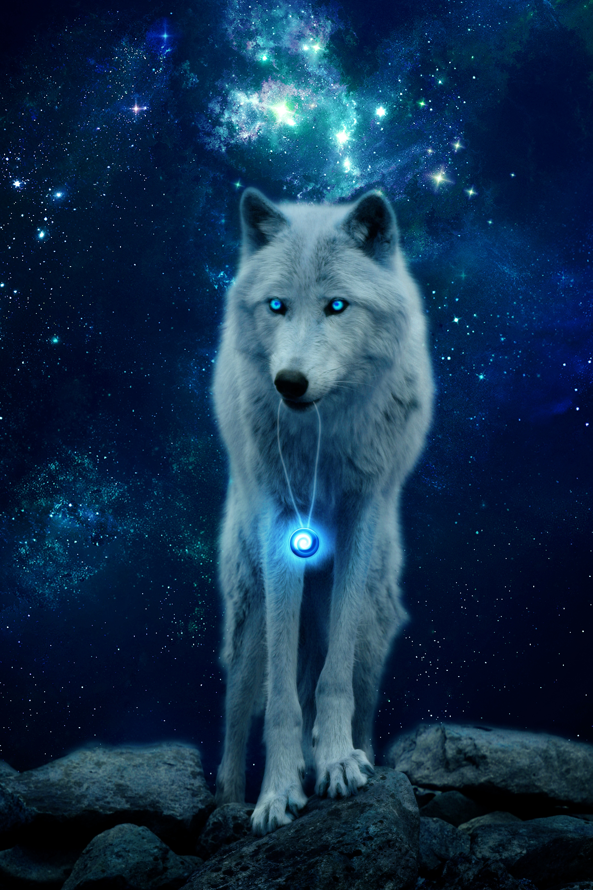

Бе́лый медве́дь, или полярный медведь, северный медведь, нанук, умка (лат. Ursus maritimus — дословно — «медведь морской», ранее рассматривался в составе отдельного рода лат. Thalarctos, который впоследствии был признан несостоятельным), — хищное млекопитающее семейства медвежьих, близкий родственник бурого медведя. Второй по величине сухопутный хищник планеты после гребнистого крокодила. Назван так из-за белой шерсти
Ко́шка — домашнее животное, одно из наиболее популярных (наряду с собакой) «животных-компаньонов»

Обезья́ны — группа млекопитающих из отряда приматов. В биологической систематике название «обезьяны» может применяться по отношению ко всем представителям инфраотряда или подотряда (оба таксона включают человека, который не является обезьяной в обиходном смысле слова; второй таксон, помимо представителей Simiiformes, включает также долгопятов).

Волк, или се́рый волк, или обыкнове́нный волк (лат. Canis lupus), — вид хищных млекопитающих из семейства псовых (Canidae). Наряду с койотом (Canis latrans), обыкновенным шакалом (Canis aureus) и ещё несколькими видами составляет род волков (Canis).